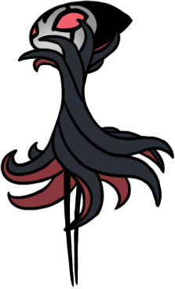

The Radiance
A Radiância é um dos maiores inimigos do jogo, uma entidade misteriosa e poderosa que controla a mente dos habitantes de Hallownest. Ela aparece como o chefe final do jogo, em uma batalha épica e desafiadora.

Hornet
Hornet é uma das figuras mais icônicas de *Hollow Knight*. Ela é filha da falecida Herói de Hallownest e serve como um chefe recorrente no jogo. Sua habilidade de lutar com agilidade e precisão a torna um adversário desafiador.

Grimm
Grimm é o líder da troupe de "Grimm Troupe" e um dos bosses mais complexos do jogo. Ele é um mestre das sombras e cria ilusões durante a luta.
Watcher Knights
Os Watcher Knights são um grupo de cavaleiros blindados que protegem a entrada para a cidade esquecida de Hallownest. Eles são uma batalha em grupo, com vários cavaleiros atacando ao mesmo tempo.

Mantis Lords
Os Mantis Lords são chefes encontrados na área de Mantis Village. Eles são rápidos e ágeis, exigindo precisão e estratégia para vencer. São um dos bosses mais técnicos do jogo.